Diamond sawing for concrete reuse
Field observations of concrete sampling, diamond sawing and lifting at an Orllati Group demolition site, with recorded dimensions, operating times and indicative costs.
Field visit: 4 February 2025. First published: 12 February 2025. Revised: 28 October 2026.
Field study of concrete recovery
On 4 February 2025, Didier Aeby guided SEPAR through an Orllati Group demolition site. The visit examined the operations involved in separating and handling concrete elements, and their implications for component recovery and reuse.
In the assessment underlying SEPAR’s original field report, concrete accounted for around three quarters of the potential environmental impact associated with materials tracked by the SEPAR Demolition Map. The observations below document sampling, controlled cutting and lifting, together with the dimensions, timing and costs recorded during the visit.
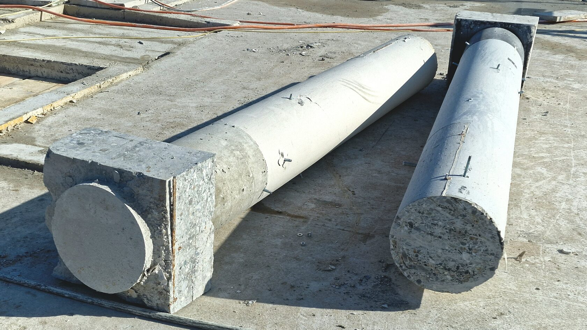
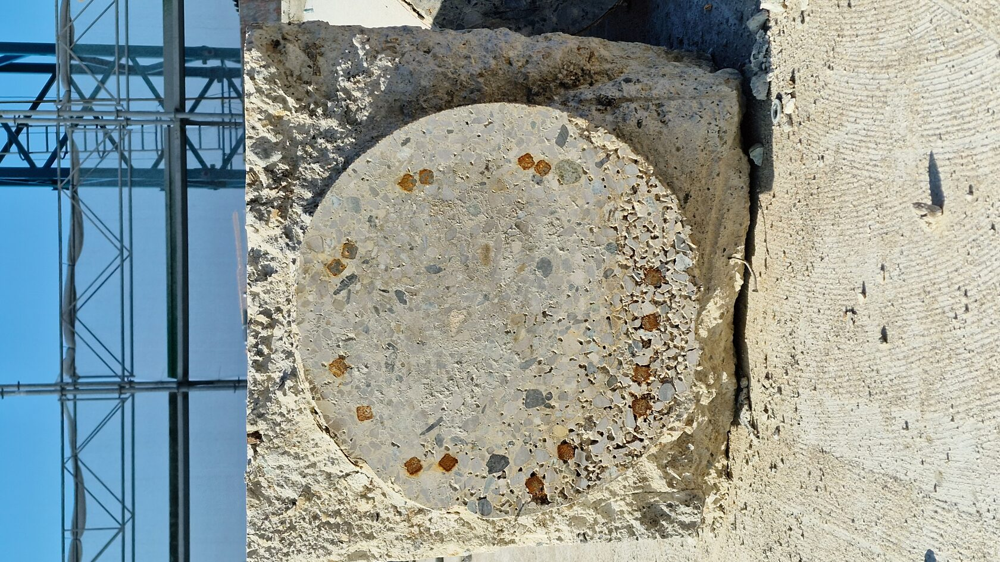
Dismantling plan and cutting grid
At the site, dismantling one floor took approximately two weeks and generated around 700 m³ of concrete. The division of the structure into elements determined cutting time, crane loads and transport requirements.
Slabs and walls were cut with diamond saws according to a predefined 7 × 1.5 m grid. Repeated dimensions made handling and transport easier to organise. For reuse, the cutting plan is also an early design decision: it defines the elements that will be available to the next project.
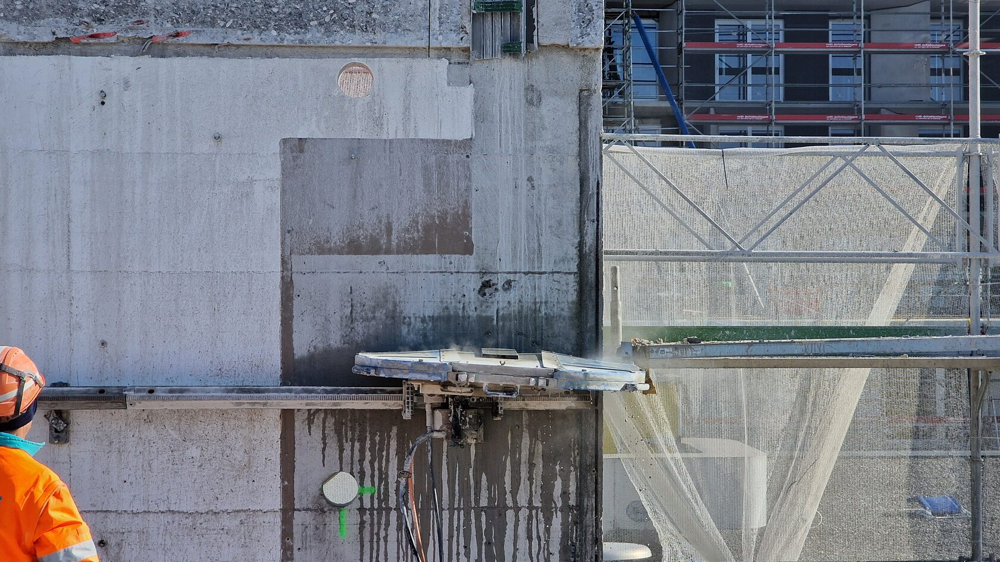
Temporary structural support
Temporary props were installed before cutting began. They supported the structure while individual pieces were separated and helped maintain a stable working area for the team.
Temporary support and the cutting sequence must be designed together for the building concerned. The arrangement maintains the stability of the remaining structure while individual elements are removed.
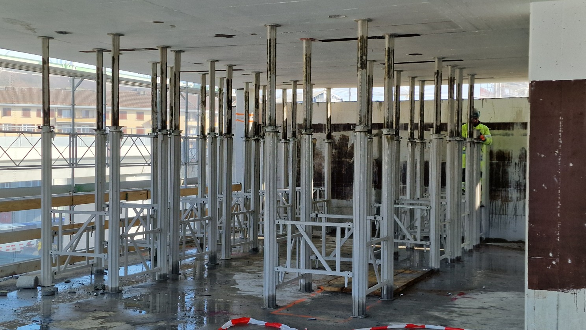
Concrete sampling and testing
Core drilling produced cylindrical samples, typically 8 cm in diameter and 16 cm long. External laboratories analysed density and strength, with a reported turnaround of two to three days for these tests.
Material test results informed estimates of labour, tool wear and dismantling time, providing inputs to the demolition cost assessment.
A reuse assessment combines these results with information on reinforcement, condition and service history, and with the loads and requirements of the proposed application. The demolition survey can therefore contribute to the evidence required for subsequent structural design.
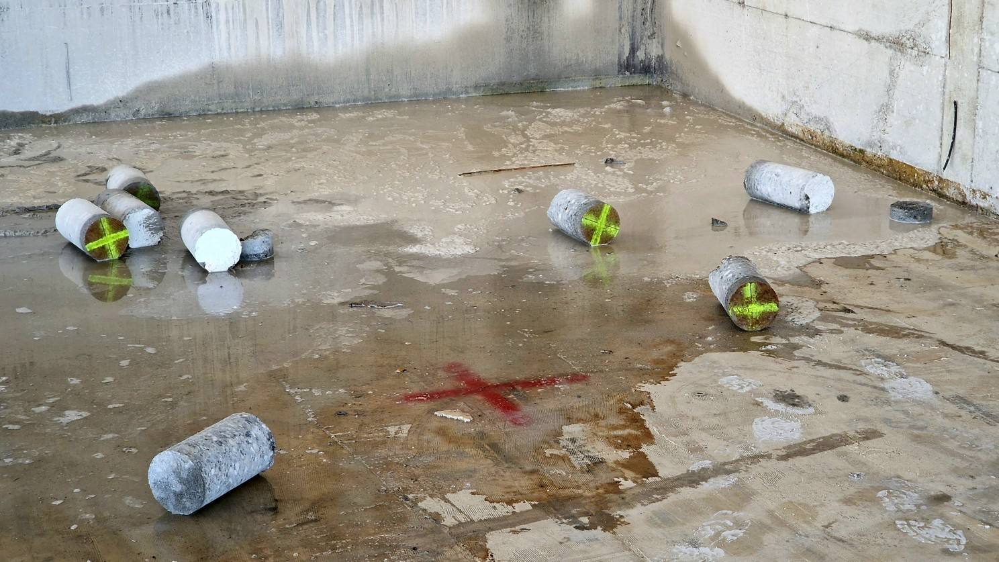
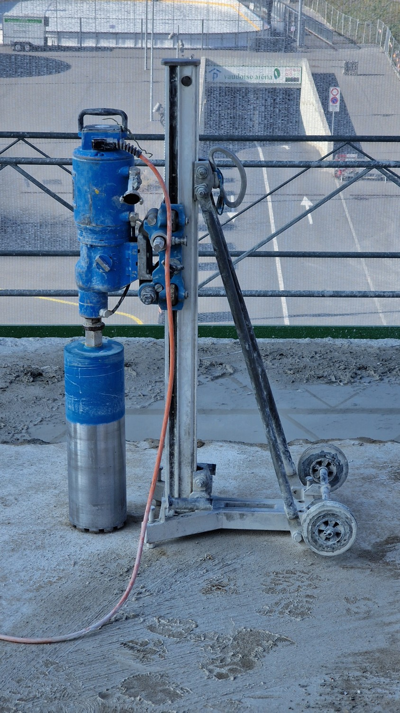
Cutting layout and saw guidance
The team marked out the pieces and fixed guide rails along the cutting lines. The rails kept the diamond saw on course, producing straight cuts and consistent dimensions for the next handling operation.
Powered diamond saws cut through the concrete along the guide rails. Consistent dimensions facilitate component inventories and comparison with the requirements of a proposed construction system.
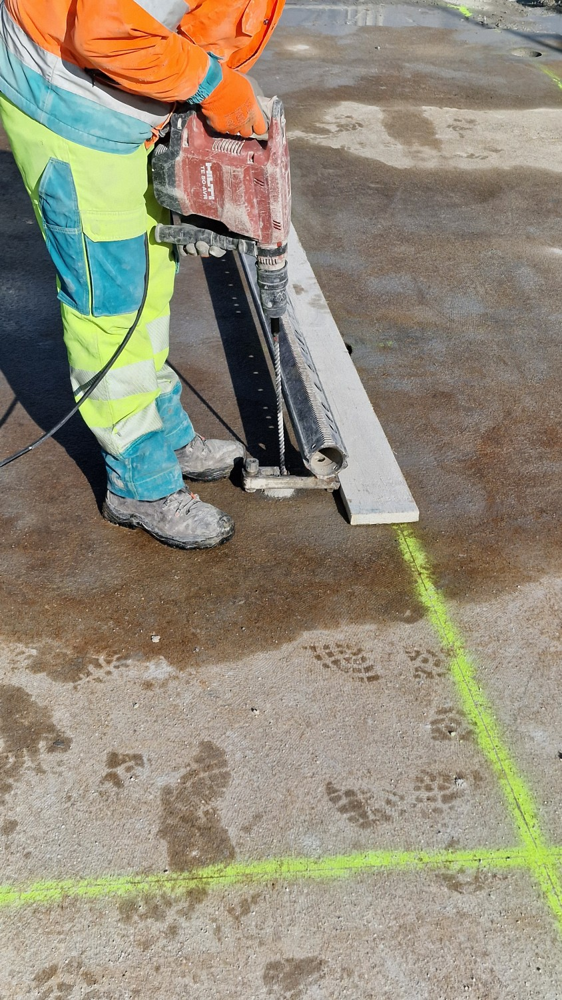
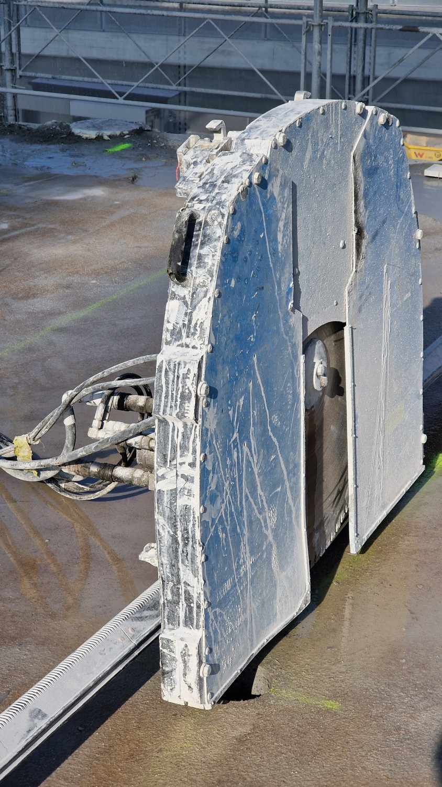
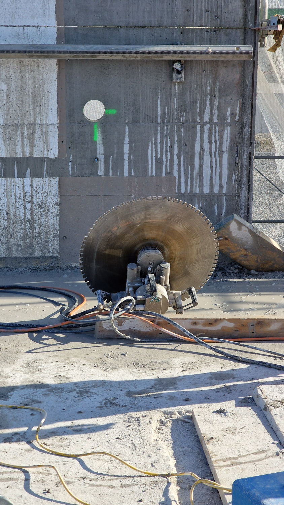
Cutting, lifting and transport
Circular holes prepared in the concrete provided attachment points for lifting chains. Their location matters beyond the demolition site: a future design has to account for these openings and for the way the element will be handled again.
First pass: the saw formed a shallow guide groove. This established the path for the deeper cut.
Second pass: the saw completed the cut while the crane supported the element. On this site, the lifting and cutting operations were coordinated to keep the blade from becoming trapped. The separated piece could then be lifted clear and moved.
Most of the elements in the workflow described at the time were destined for crushing and recycling. Recovery for another building brings further tasks into the sequence: selecting suitable pieces, recording their condition, arranging storage and transport, and matching them to a project. The lifting holes and cut dimensions are part of that planning.
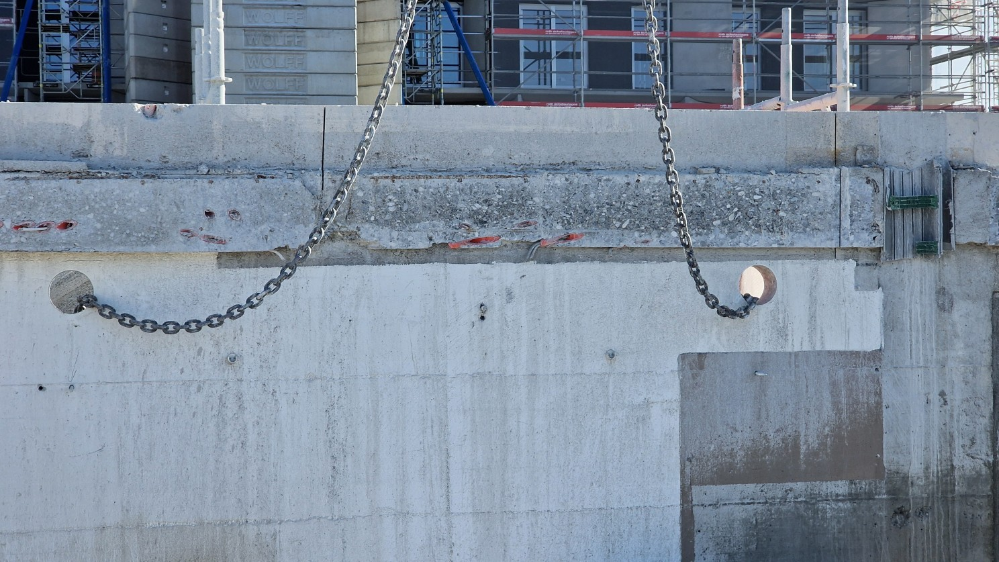
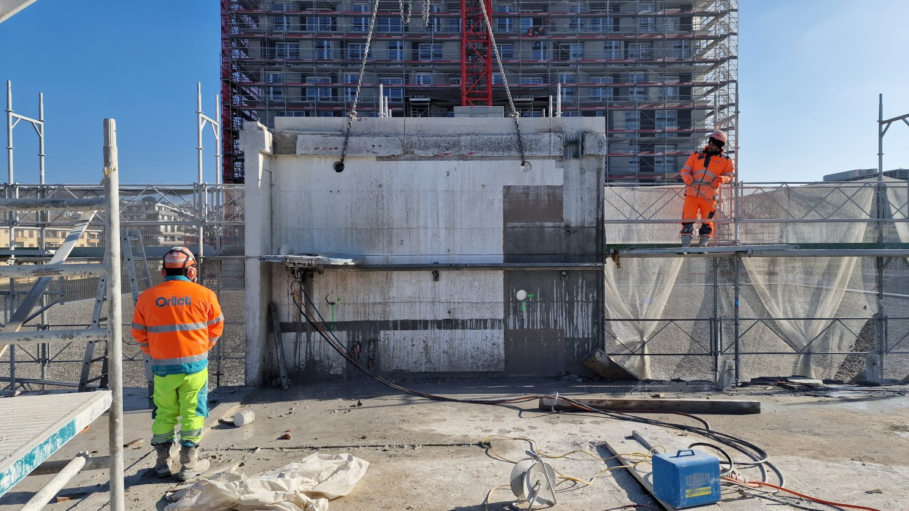
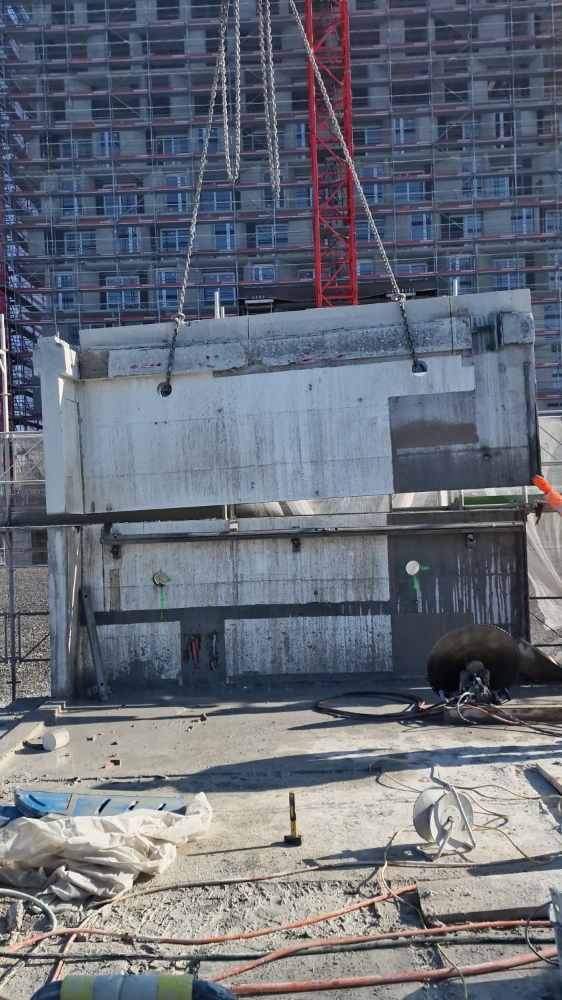
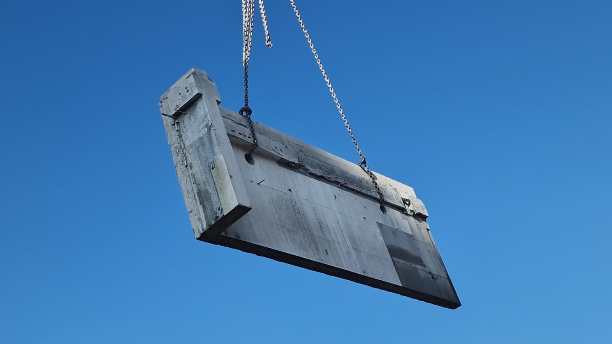
Indicative cutting costs
The February 2025 field report recorded an indicative cutting rate of CHF 155 per m² of cut surface for reinforced concrete 150–200 mm thick. For the example slab, 7 × 1.5 × 0.2 m, the reported CHF 527 can be reconstructed by allowing for cuts along all four edges:
| Slab area | 7 × 1.5 = 10.5 m² |
|---|---|
| Concrete volume | 7 × 1.5 × 0.2 = 2.1 m³ |
| Total cutting length | 2 × (7 + 1.5) = 17 m |
| Cut surface | 17 × 0.2 = 3.4 m² |
| Indicative cutting rate | CHF 155 / m² of cut surface |
| Calculated cutting cost | 3.4 × 155 = CHF 527 |
CHF 527 covers cutting. The full cost of a component ready for use also includes building and material assessment, lifting, transport, storage, preparation and assembly. SEPAR’s production-chain research examines these costs and the gaps in the available data.
The original report used CHF 630 as the comparator for a new in-situ slab. The CHF 103 difference, around 16%, compares that figure with cutting alone. The report also proposed a 40% reduction as a target for an industrialised approach.
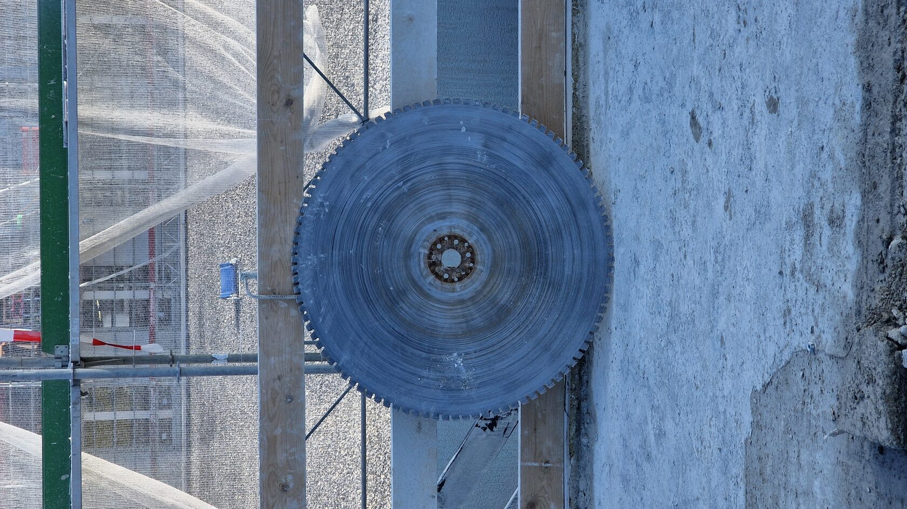
Assessment for component reuse
Crushing concrete supplies aggregate for a subsequent production cycle. Component reuse retains the existing element and its manufactured geometry. Assessing these recovery routes requires consideration of condition, processing, transport and the intended application.
The original article referred to Alexandros Glias’s 2013 study, The “Donor Skelet”: Designing with reused structural concrete elements. Its comparison illustrates why recovery routes deserve examination: recycling still involves processing and new concrete production, while component reuse can retain more of the existing product. The environmental result depends on the material, processing and transport needed for the specific project.
The visit informed SEPAR’s research into the assessment, recovery, transport and fabrication of reclaimed-concrete components. The development roadmap documents subsequent prototype assembly and laboratory testing, followed by the planned full-scale demonstrator.
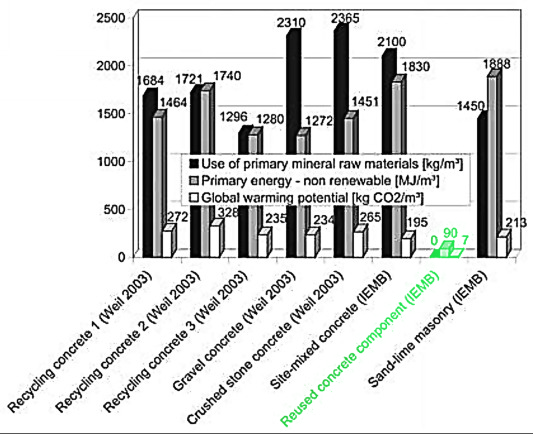
Site photographs: SEPAR, 2025. Research figure: Glias, 2013, as reproduced in the original article.